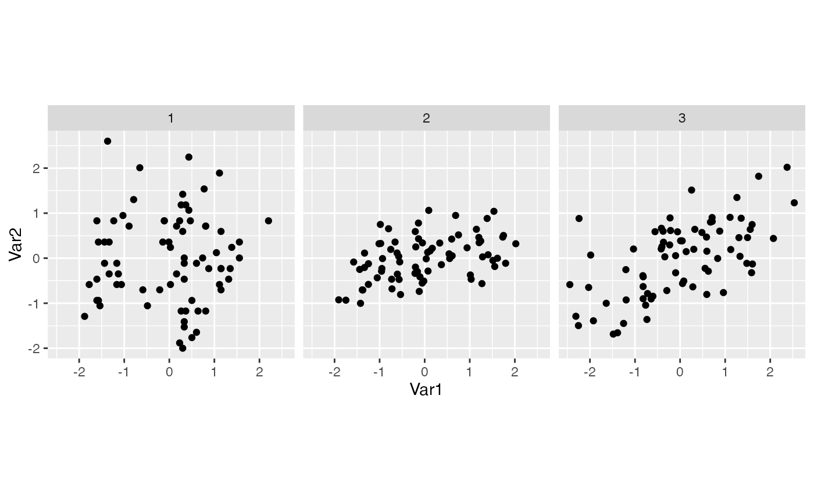

This computes the projected values of each observation at each step, and allows you to recreate static views of the animated plots.
Usage
path_curves(history, data = attr(history, "data"))Arguments
- history
list of bases produced by
save_history(or otherwise)- data
dataset to be projected on to bases
Examples
path1d <- save_history(flea[, 1:6], grand_tour(1), 3)
#> Converting input data to the required matrix format.
path2d <- save_history(flea[, 1:6], grand_tour(2), 3)
#> Converting input data to the required matrix format.
if (require("ggplot2")) {
plot(path_curves(path1d))
plot(path_curves(interpolate(path1d)))
plot(path_curves(path2d))
plot(path_curves(interpolate(path2d)))
# Instead of relying on the built in plot method, you might want to
# generate your own. Here are few examples of alternative displays:
df <- path_curves(path2d)
ggplot(data = df, aes(x = step, y = value, group = obs:var, colour = var)) +
geom_line() +
facet_wrap(~obs)
library(tidyr)
ggplot(
data = pivot_wider(df,
id_cols = c(obs, step),
names_from = var, names_prefix = "Var",
values_from = value
),
aes(x = Var1, y = Var2)
) +
geom_point() +
facet_wrap(~step) +
coord_equal()
}
#> Loading required package: ggplot2
